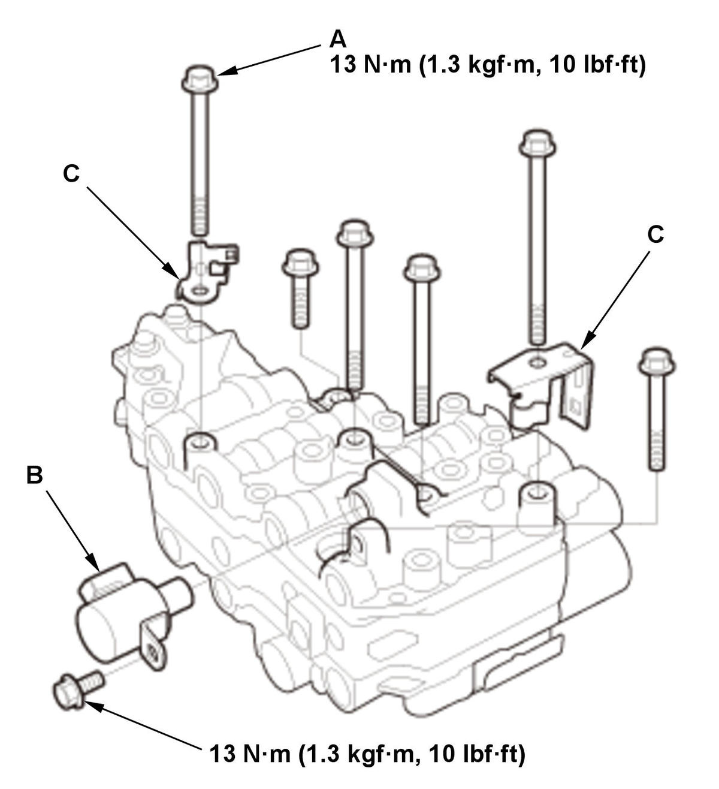
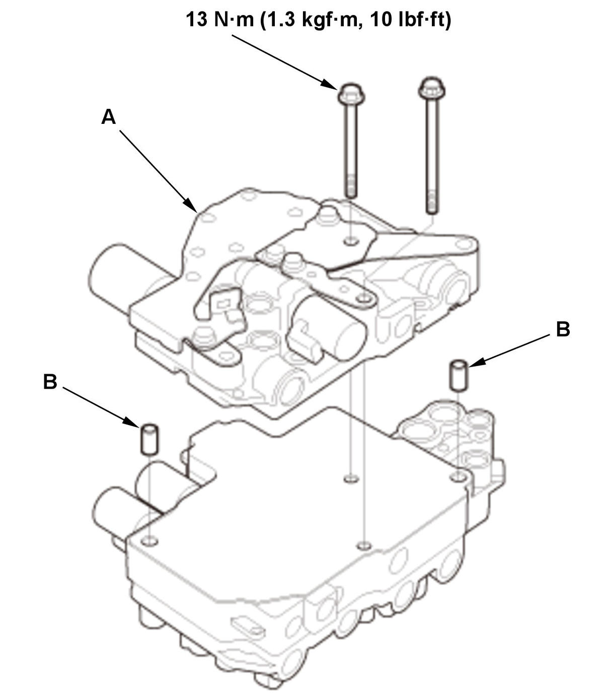
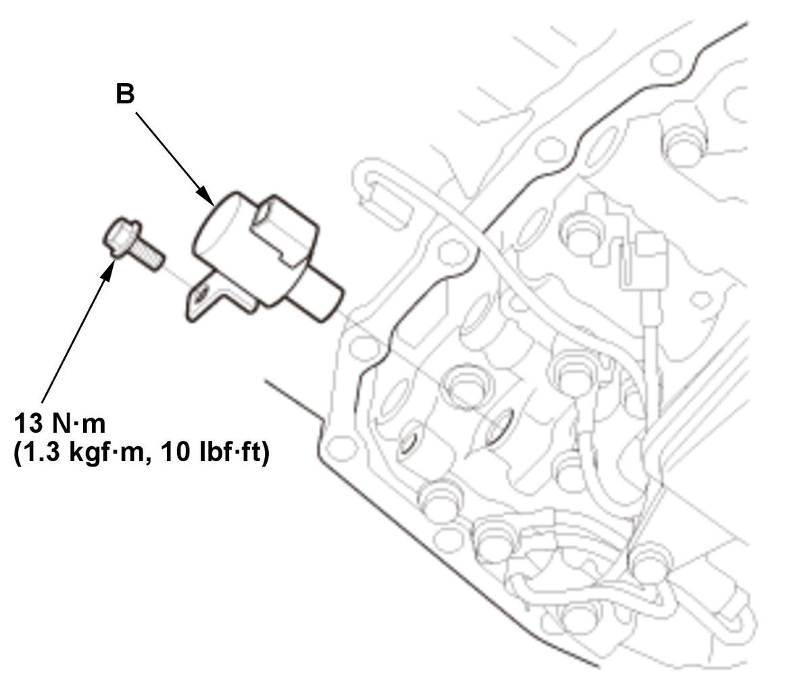
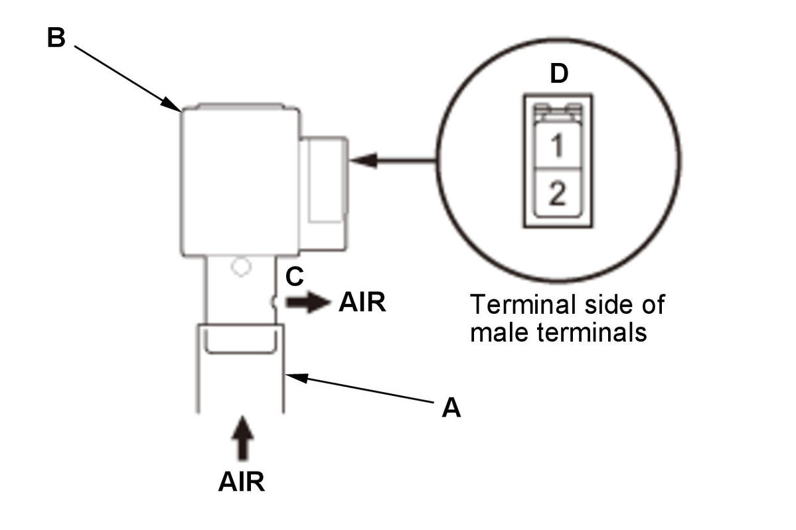

CVT Solenoid Valve Test (K20C2 (CVT)): Test
NOTE: Keep all foreign particles out of the transmission.
Solenoid Valve Resistance Check
- Vehicle - Lift
- Engine Undercover Plate - Remove
- Engine Undercover Lid - Remove
- Solenoid Valve - Resistance Check
1. Disconnect the connector (A).
NOTE:
- To prevent damage, cover the connector using a shop towel.
- Check the connector for corrosion, dirt, or oil, and clean or repair if necessary.
2. Measure the resistance between the connector (B) terminal and body ground according to the table.
- If the resistance is within the standard, the test is complete, and install all removed parts.
- If the resistance is out of the standard, check the solenoid valve operation.
Solenoid valve Terminal Standard Resistance CVT clutch pressure control solenoid valve No. 7 4.6-6.3 Ω CVT drive pulley pressure control solenoid valve No. 5 4.6-6.3 Ω CVT driven pulley pressure control solenoid valve No. 6 4.6-6.3 Ω CVT lock-up clutch control solenoid valve No. 8 4.6-6.3 Ω Shift solenoid valve B No. 4 8.9-12.2 Ω

CVT Clutch Pressure Control Solenoid Valve
- CVT Clutch Pressure Control Solenoid Valve - Operation Check
1. Remove the valve body assembly 2. Disconnect the connector (A).
3. Connect a jumper wire from the positive battery terminal to connector (B) terminal No. 2, and connect another jumper wire from the negative battery terminal to connector terminal No. 1.
- If a clicking sound is heard, repair or replace the solenoid wire harness.
- If no clicking sound is heard, replace the CVT clutch pressure control solenoid valve .
- All Removed Parts - Install
1. Install the parts in the reverse order of removal.
NOTE: Check the connector for corrosion, dirt, or oil, and clean or repair if necessary.
CVT Drive Pulley Pressure Control Solenoid Valve
- CVT Drive Pulley Pressure Control Solenoid Valve - Operation Check
1. Remove the transmission fluid pan . NOTE: The actual transmission fluid (HCF-2) capacity will vary from the specified capacity based on the length of time the transmission fluid pan is off the transmission. Avoid leaving the transmission fluid pan off for extend periods of time.
2. Disconnect the connector (A).
3. Connect a jumper wire from the positive battery terminal to connector (B) terminal No. 2, and connect another jumper wire from the negative battery terminal to connector terminal No. 1.
- If a clicking sound is heard, repair or replace the solenoid wire harness.
- If no clicking sound is heard, replace the CVT drive pulley pressure control solenoid valve .
- All Removed Parts - Install
1. Install the parts in the reverse order of removal.
NOTE: Check the connector for corrosion, dirt, or oil, and clean or repair if necessary.
CVT Driven Pulley Pressure Control Solenoid Valve
- CVT Driven Pulley Pressure Control Solenoid Valve - Operation Check
1. Remove the transmission fluid pan . NOTE: The actual transmission fluid (HCF-2) capacity will vary from the specified capacity based on the length of time the transmission fluid pan is off the transmission. Avoid leaving the transmission fluid pan off for extend periods of time.
2. Remove the transmission fluid strainer
3. Disconnect the connector (A).
4. Connect a jumper wire from the positive battery terminal to connector (B) terminal No. 2, and connect another jumper wire from the negative battery terminal to connector terminal No. 1.
- If a clicking sound is heard, repair or replace the solenoid wire harness.
- If no clicking sound is heard, replace the CVT driven pulley pressure control solenoid valve .
- All Removed Parts - Install
1. Install the parts in the reverse order of removal.
NOTE: Check the connector for corrosion, dirt, or oil, and clean or repair if necessary.
CVT Lock-Up Clutch Control Solenoid Valve
- CVT Lock-Up Clutch Control Solenoid Valve - Operation Check
1. Remove the valve body assembly 2. Disconnect the connector (A).
3. Connect a jumper wire from the positive battery terminal to connector (B) terminal No. 2, and connect another jumper wire from the negative battery terminal to connector terminal No. 1.
- If a clicking sound is heard, go to the next step.
- If no clicking sound is heard, replace the CVT lock-up clutch control solenoid valve .
Fig 1: Valve Body Assembly Components And Shift Solenoid Valve With Torque Specifications (K20C2 - CVT)
Courtesy of HONDA, U.S.A., INC.4. Remove the valve body assembly .
5. Remove these parts in the following order.- Shift solenoid valve B
- Bolts (A)
- Harness clamp brackets (C)

Courtesy of HONDA, U.S.A., INC.6. Remove the secondary valve body (A) with the dowel pins (B). 7. Remove the lock pin (A), then remove the CVT lock-up clutch control solenoid valve (B). 8. Connect a tube (A) to the CVT lock-up clutch control solenoid valve (B). 9. Connect a jumper wire from the positive battery terminal to connector terminal No. 2, and connect another jumper wire from the negative battery terminal to connector terminal No. 1. Blow air into the tube (A).
- If the air goes out of the port (C), go to the next step.
- If the air does not go out of the port (C), replace the CVT lock-up clutch control solenoid valve .
10. Disconnect the jumper wires. Blow air into the tube.
- If the air goes out of the port (C), replace the CVT lock-up clutch control solenoid valve .
- If the air does not go out of the port (C), repair or replace the solenoid wire harness.
- All Removed Parts - Install
1. Install the parts in the reverse order of removal.
NOTE: Check the connector for corrosion, dirt, or oil, and clean or repair if necessary.
Shift Solenoid Valve B
- Shift Solenoid Valve B - Operation Check
1. Remove the transmission fluid pan . NOTE: The actual transmission fluid (HCF-2) capacity will vary from the specified capacity based on the length of time the transmission fluid pan is off the transmission. Avoid leaving the transmission fluid pan off for extend periods of time.
2. Disconnect the connector (A).
3. Connect a jumper wire from the positive battery terminal to connector (B) terminal No. 2, and connect another jumper wire from the negative battery terminal to connector terminal No. 1.
- If a clicking sound is heard, go to the next step.
- If no clicking sound is heard, replace shift solenoid valve B .


Courtesy of HONDA, U.S.A., INC.HONDA, U.S.A., INC.4. Remove shift solenoid valve B.
NOTE: Check the connector for corrosion, dirt, or oil, and clean or repair if necessary.5. Connect a tube (A) to shift solenoid valve B. 6. Blow air into the tube.
- If the air goes out of the port (C), go to the next step.
- If the air does not go out of the port (C), replace shift solenoid valve B .
7. Connect a jumper wire from the positive battery terminal to connector (D) terminal No. 2, and connect another jumper wire from the negative battery terminal to connector terminal No. 1.
8. Blow air into the tube.
- If the air goes out of the port (C), replace shift solenoid valve B .
- If the air does not go out of the port (C), repair or replace the solenoid wire harness.
- All Removed Parts - Install
1. Install the parts in the reverse order of removal.
NOTE: Check the connector for corrosion, dirt, or oil, and clean or repair if necessary.